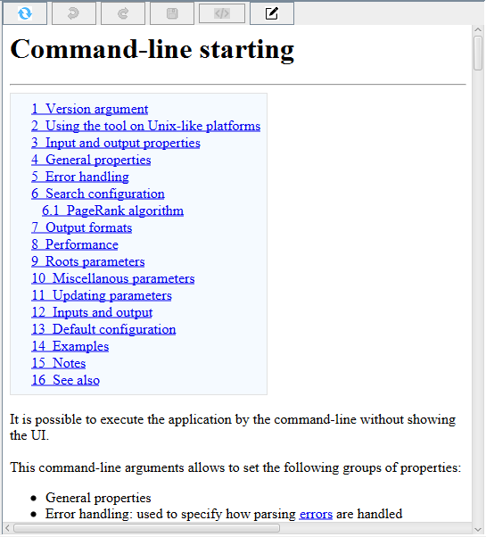
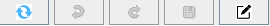
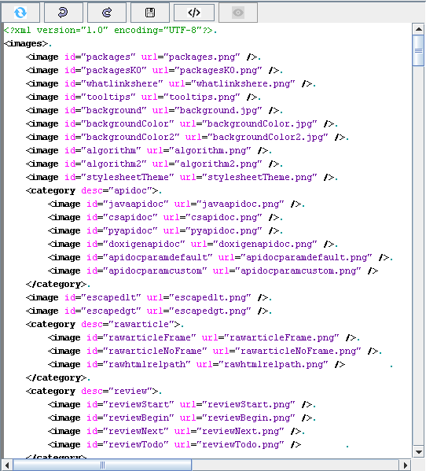
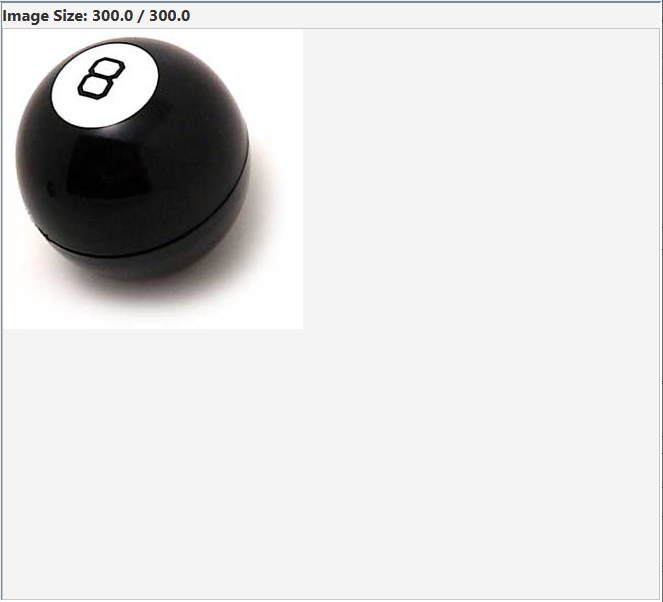

Home
Categories
Dictionary
Download
Project Details
Changes Log
What Links Here
How To
Syntax
FAQ
License
Editor content panel
1 Content for articles
1.1 Search in html content
1.2 Edition mode
2 Content for images definition, resources definition, and infobox definitions
3 Content for images
4 See also
1.1 Search in html content
1.2 Edition mode
2 Content for images definition, resources definition, and infobox definitions
3 Content for images
4 See also
The right panel of the Editor window shows the content of the currently selected element in the tree.
The content of the panel is different if the selected element is:
A toolbar at the top of the html content allows several actions:
The toolbar offer initially the following buttons:
You can search for a term in any by typing Ctrl+F as you could do in any Web browser.
In the edition mode, the content shows an XML editor of the article:

The toolbar has the following buttons:

The toolbar offer the following buttons:
The content of the panel is different if the selected element is:
- An article or the index article
- A Resource definition file
- A Image definition file
- A Infobox definition files
- The Dictionary
- A Category
- The menus
- The footer and header files
Content for articles
The default content for an article shows the html content for the article, as it would be in the generated wiki:
A toolbar at the top of the html content allows several actions:

The toolbar offer initially the following buttons:
-
 : The Refresh button allows to refresh the current content by parsing again the article
: The Refresh button allows to refresh the current content by parsing again the article -
 : The Edit button allows to enter in an XML edition mode of the article
: The Edit button allows to enter in an XML edition mode of the article
Search in html content
Main Article: Editor search in page
You can search for a term in any by typing Ctrl+F as you could do in any Web browser.
Edition mode
Main Article: Editor edition mode
In the edition mode, the content shows an XML editor of the article:
The toolbar has the following buttons:
The toolbar offer the following buttons:
-
: The Refresh button allows to refresh the current content by parsing again the element
-
 : The Undo and Redo buttons allows to undo or redo the edition of the current element
: The Undo and Redo buttons allows to undo or redo the edition of the current element -
 : The Save button allows to save the content of the element on the File system. This will trigger a parsing of the file on the disk, and eventually will present errors detected during the parsing. If the content of the element has been modified, the icon color will change:
: The Save button allows to save the content of the element on the File system. This will trigger a parsing of the file on the disk, and eventually will present errors detected during the parsing. If the content of the element has been modified, the icon color will change: 
-
 : The format button allows to format the XML content of Editor XML elements. The indentation for the formatted XML file is defined by the XML formatting Editor option
: The format button allows to format the XML content of Editor XML elements. The indentation for the formatted XML file is defined by the XML formatting Editor option -
 : The View button allows to exit the edition mode an enter again the html presentation of the article
: The View button allows to exit the edition mode an enter again the html presentation of the article
Content for images definition, resources definition, and infobox definitions
For Resource definition files, Image definition files, and Infobox definition files, there is only an edition mode, which presents the XML content of the file:
Content for images
For images, there is only an edition mode, which presents the image:
See also
- DocGenerator editor: This article explains the DocGenerator editor
- Editor window: This article explains the content of the Editor window
- Editor tree: This article is about the left panel of the editor window, which shows the tree of the wiki
×

Categories: Editor | Gui